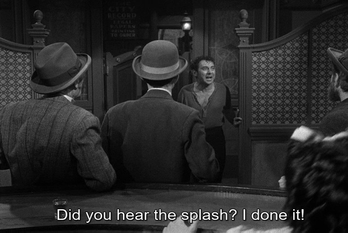
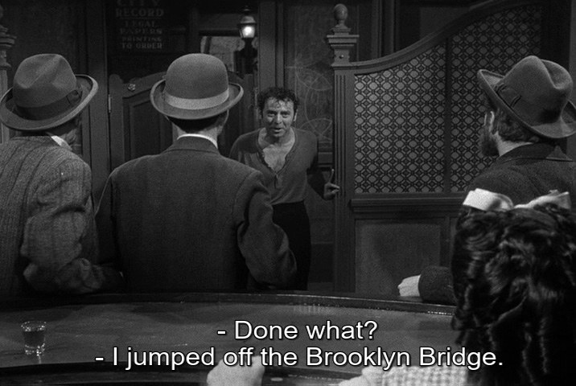
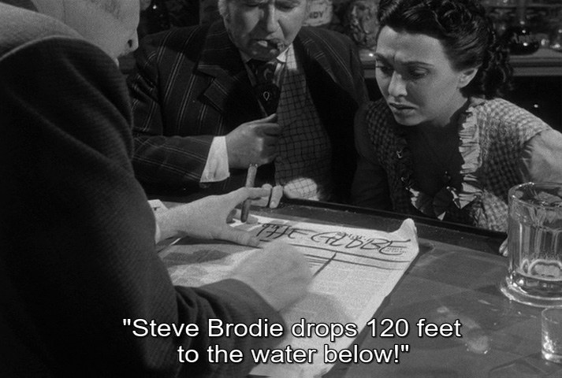
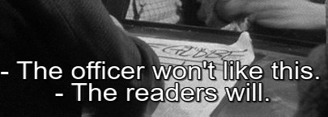

Issue #1
Introduction: To Utopia
“To Utopia”
Beginnings rarely occur in high places. Oftentimes they start in the East River. Like Steve Brodie, the greatest directors cast their works into the maw of history; they survive, but only a few are there to record it. Those willing to preserve these gestures, these miraculous events in the midst of background radiation, line the blocks of Park Row looking for honest work.
Today, the critic is under the watchful eye of those consumed by the thematic and/or shotsheet analysis styles common within the commercial ecosystem of film “criticism,” or to us, the lack thereof. Printing presses are smashed where efforts are made to discover the sublime, the truth of our experience. Park Row Magazine hopes to, through the differing ideas and concepts of individual writers, create a shared idea of the collective future for the seventh art. Whereas others might write off directors or discard the sum of a film’s mise en scene for a part, we hope to exalt these artists wholly and extensively. Within this first issue, we offer personal visions, new insights on older styles, conversations with upcoming metteurs en scene and a recontextualization of the meaning of the ontological value of images. We have assembled eclectic minds from across the world who seek to bear witness to the truth of cinema with a veracity that would rustle even Phineas Mitchell.
These we share with you without reservations and in earnest.




— The Park Row Editors